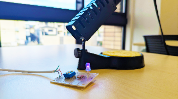

第1弾 子供たち対象の電子工作教室を開催します！

※京都橘大学 学術振興課より提供
2026年2月22日(金)に京都市伏見区醍醐支所が主催するだいご子育てオープンデイにて 「京都橘大学×醍醐支所 LEDでいろいろな色をつくろう！キラキラ電子工作体験 ～特色ある学習・体験プログラム創出事業」を実施します。 本イベントは、RGB(Red・Green・Blue)一体型のLEDを用いて、光の三原色について学びながら、オリジナルの色を表現できる電子工作を行う体験型ワークショップです。 当日は、京都橘大学の学生が講師として参加し、子供たちに楽しく電子工作を教えます。ご興味のある方は、ぜひご参加ください。
-
本イベントの詳細
https://www.city.kyoto.lg.jp/fushimi/page/0000347909.html
(京都市伏見区 京都橘大学×醍醐支所 LEDでいろいろな色をつくろう！キラキラ電子工作体験 ～特色ある学習・体験プログラム創出事業＠だいご子育てオープンデイ～)